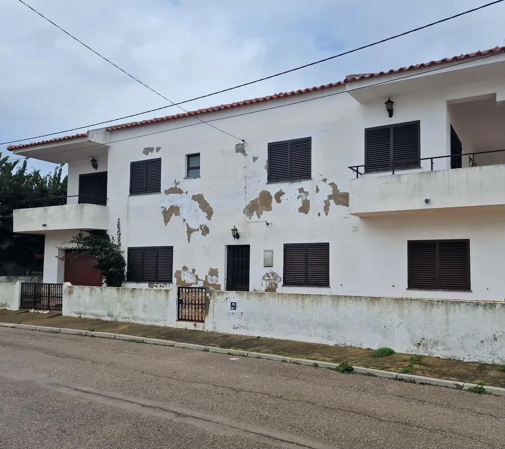
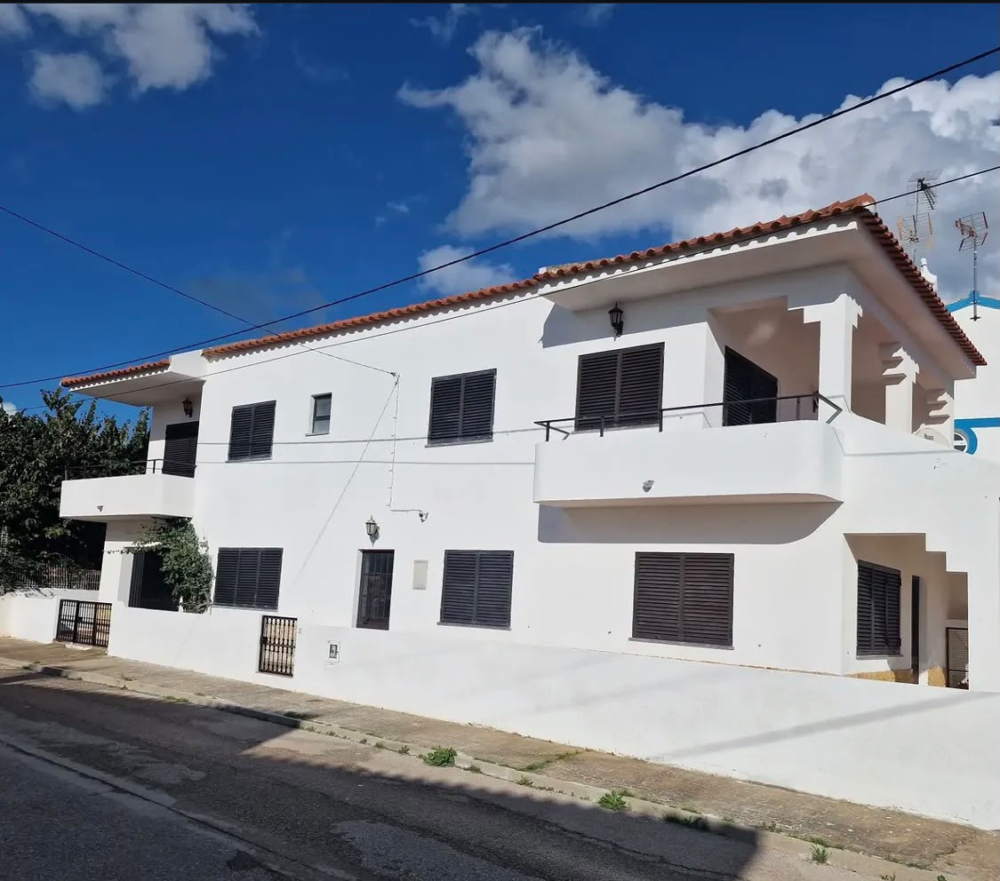
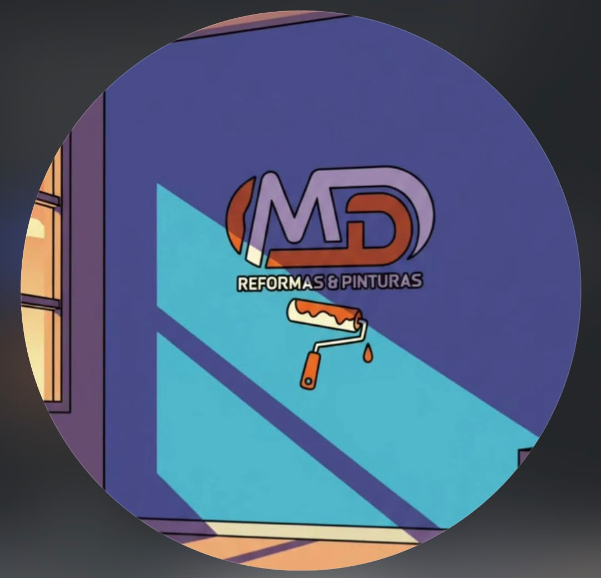
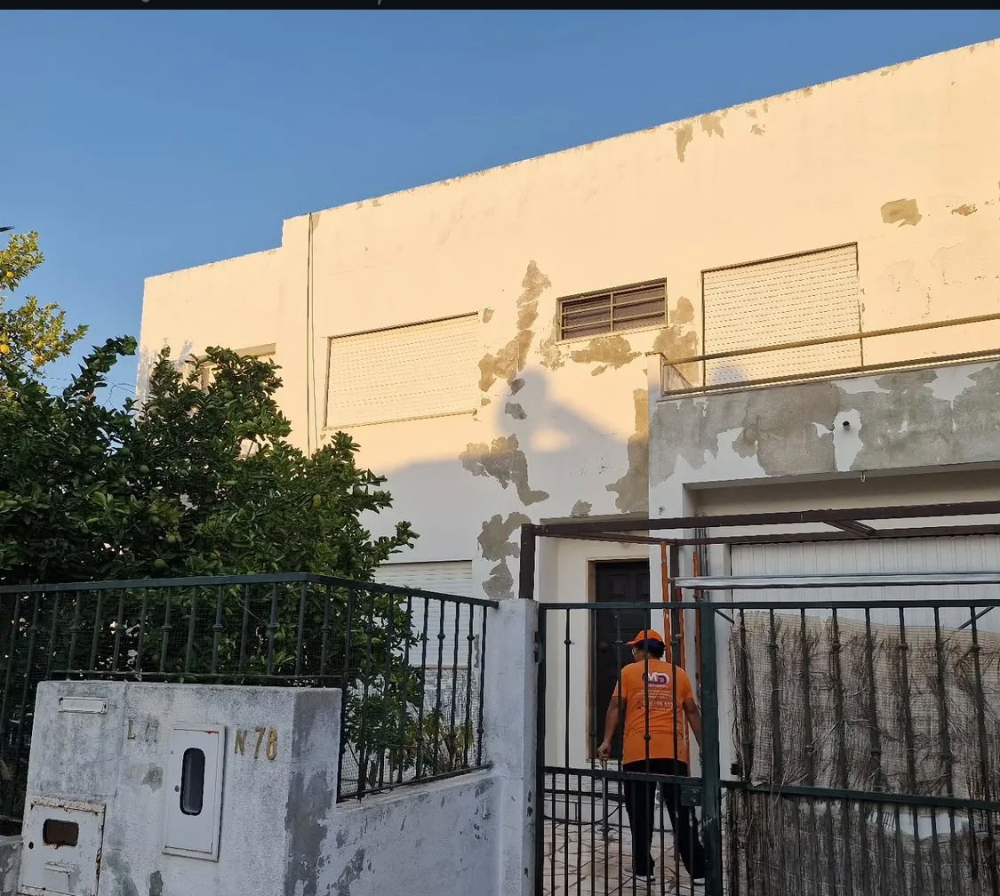
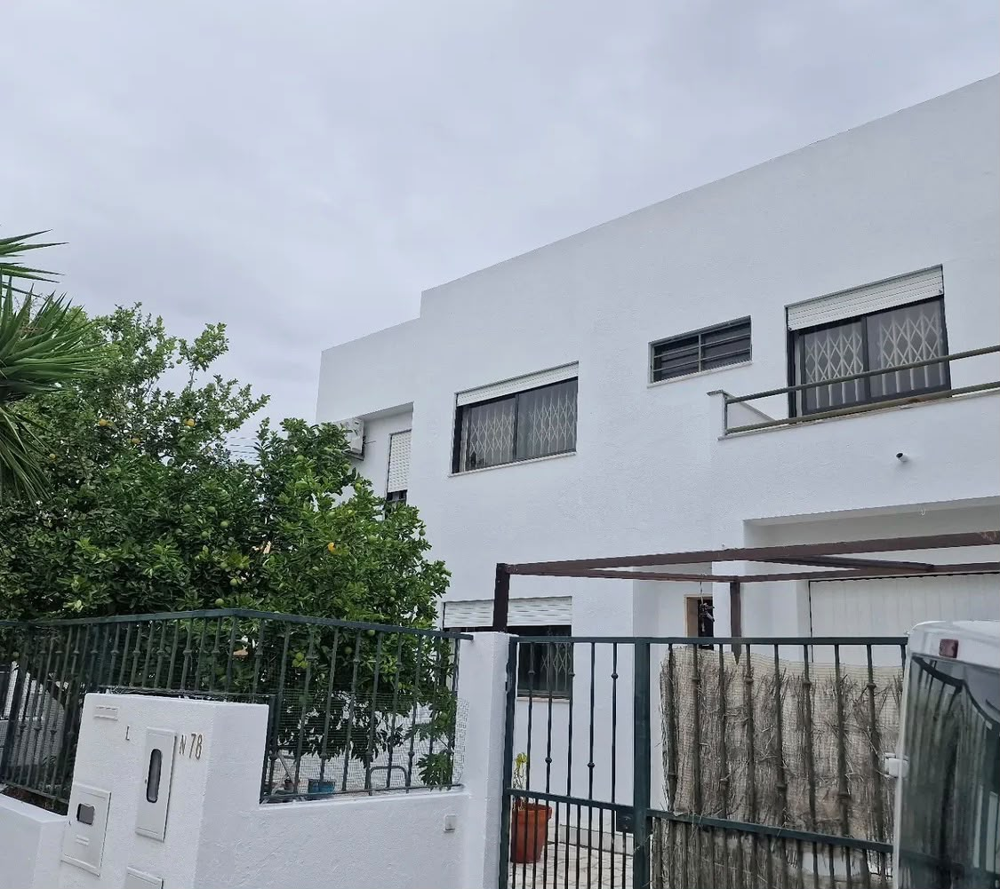
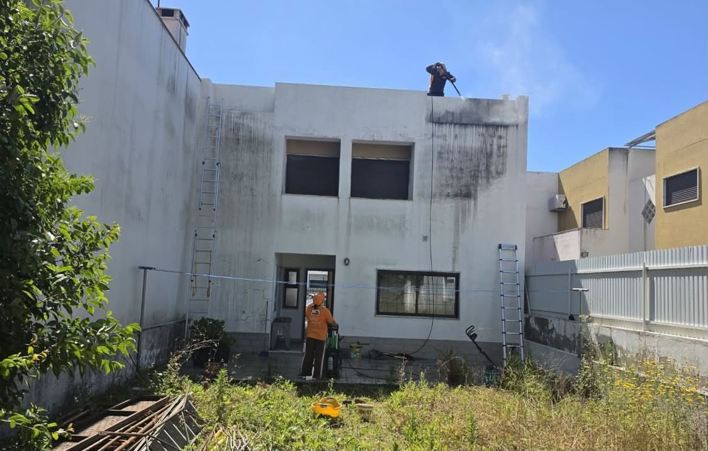
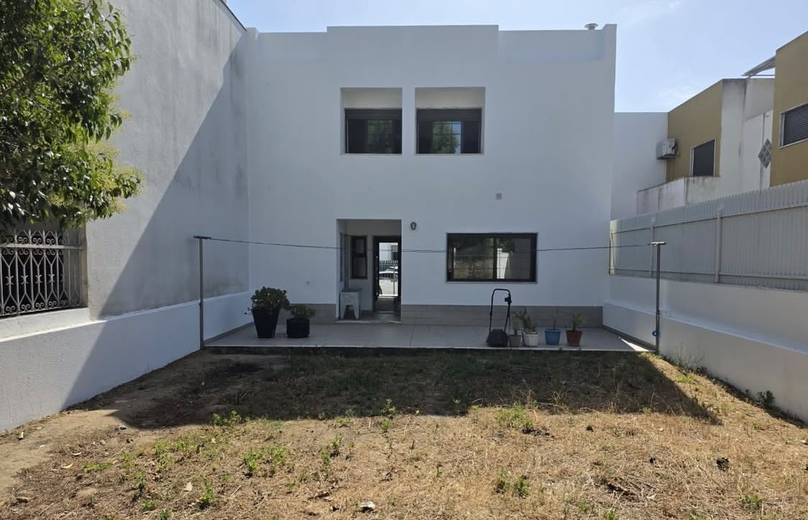

01 TRANSFORMAÇÃO
PINTURA EXTERIOR


MDREFORMAS E PINTURASMD REFORMAS E PINTURAS
Especialistas em pinturas, remodelações e trabalhos em telhados, com atenção à qualidade e aos detalhes.
Na MD Reformas e Pinturas, dedicamo-nos à transformação e valorização de espaços através de serviços de pintura, remodelação e trabalhos em telhados.
Cada intervenção é pensada para melhorar a apresentação, funcionalidade e conservação dos imóveis.
Conheça as nossas soluçõesDo interior ao exterior.
Um novo olhar sobre o seu espaço.
Renovação de espaços interiores com acabamentos cuidados e atenção ao detalhe.
02Intervenções destinadas a renovar e valorizar a apresentação exterior dos edifícios.
03Trabalhos de renovação e melhoria de espaços residenciais e comerciais.
04Intervenções em coberturas e telhados, de acordo com as necessidades de cada imóvel.
Descubra como cada intervenção pode transformar a aparência e valorização de um espaço.






DA PREPARAÇÃO AO RESULTADO
Antes da transformação, há trabalho. Acompanhe de perto uma intervenção real da MD Reformas e Pinturas.
TRABALHO REAL, VISTO DE PERTO.
Entre em contacto com a MD Reformas e Pinturas
e peça o seu orçamento.